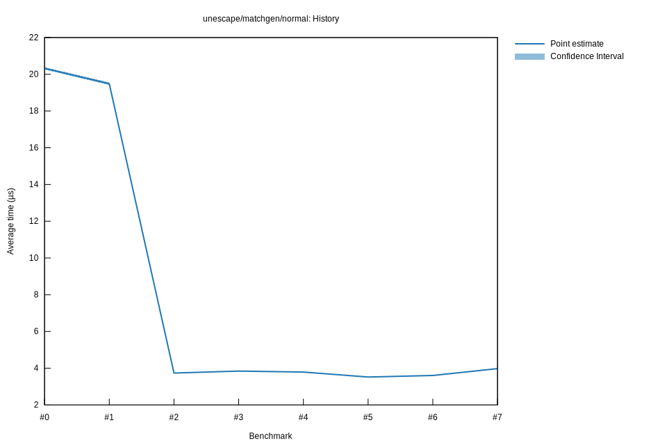

# 62025-10-31T17:54:56-07:00
|
Lower Bound |
Estimate |
Upper Bound |
| Value: |
3.59µs |
3.60µs |
3.62µs |
| Throughput: |
4489.00MiB/s |
4469.74MiB/s |
4449.70MiB/s |
| Change in Value: |
+1.5559% |
+2.5691% |
+3.6320% |
| Change in Throughput: |
-1.5320% |
-2.5047% |
-3.5047% |
No change in performance detected.
# 52025-10-31T17:48:18-07:00
|
Lower Bound |
Estimate |
Upper Bound |
| Value: |
3.50µs |
3.52µs |
3.53µs |
| Throughput: |
4597.32MiB/s |
4578.20MiB/s |
4558.22MiB/s |
| Change in Value: |
-8.2263% |
-7.3031% |
-6.3596% |
| Change in Throughput: |
+8.9637% |
+7.8785% |
+6.7915% |
No change in performance detected.
# 42025-10-29T22:27:07-07:00
|
Lower Bound |
Estimate |
Upper Bound |
| Value: |
3.78µs |
3.79µs |
3.80µs |
| Throughput: |
4266.30MiB/s |
4251.19MiB/s |
4235.54MiB/s |
| Change in Value: |
-2.8939% |
-1.5202% |
-0.2483% |
| Change in Throughput: |
+2.9802% |
+1.5437% |
+0.2489% |
No change in performance detected.
# 32025-10-29T22:20:31-07:00
|
Lower Bound |
Estimate |
Upper Bound |
| Value: |
3.82µs |
3.84µs |
3.87µs |
| Throughput: |
4214.01MiB/s |
4192.02MiB/s |
4168.42MiB/s |
| Change in Value: |
+2.2070% |
+3.3641% |
+4.9119% |
| Change in Throughput: |
-2.1593% |
-3.2546% |
-4.6819% |
No change in performance detected.
# 22025-10-29T19:44:53-07:00
|
Lower Bound |
Estimate |
Upper Bound |
| Value: |
3.72µs |
3.74µs |
3.75µs |
| Throughput: |
4328.84MiB/s |
4312.27MiB/s |
4294.94MiB/s |
| Change in Value: |
-81.067% |
-80.872% |
-80.696% |
| Change in Throughput: |
+428.17% |
+422.78% |
+418.02% |
No change in performance detected.
# 12025-10-29T19:01:43-07:00
|
Lower Bound |
Estimate |
Upper Bound |
| Value: |
19.42µs |
19.49µs |
19.56µs |
| Throughput: |
829.90MiB/s |
826.93MiB/s |
823.81MiB/s |
| Change in Value: |
-4.8054% |
-3.9620% |
-3.0189% |
| Change in Throughput: |
+5.0480% |
+4.1254% |
+3.1129% |
No change in performance detected.
# 02025-10-26T16:46:05-07:00
|
Lower Bound |
Estimate |
Upper Bound |
| Value: |
20.26µs |
20.32µs |
20.39µs |
| Throughput: |
795.42MiB/s |
792.86MiB/s |
790.23MiB/s |